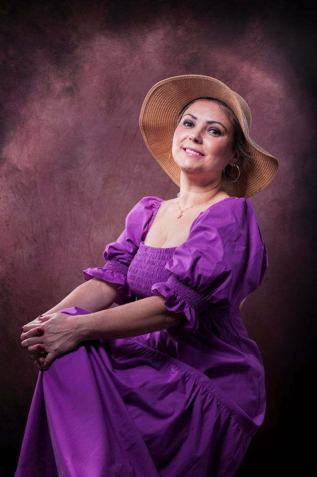
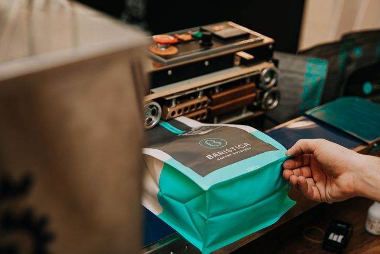
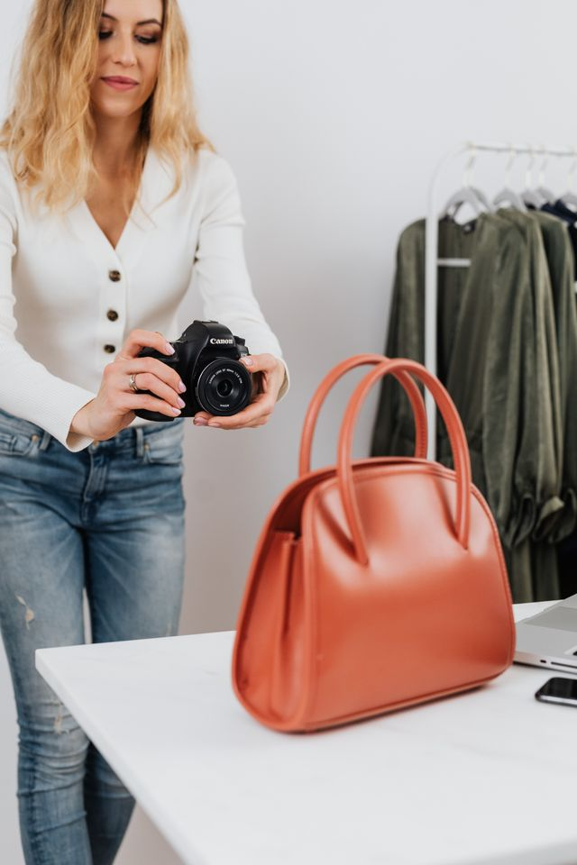
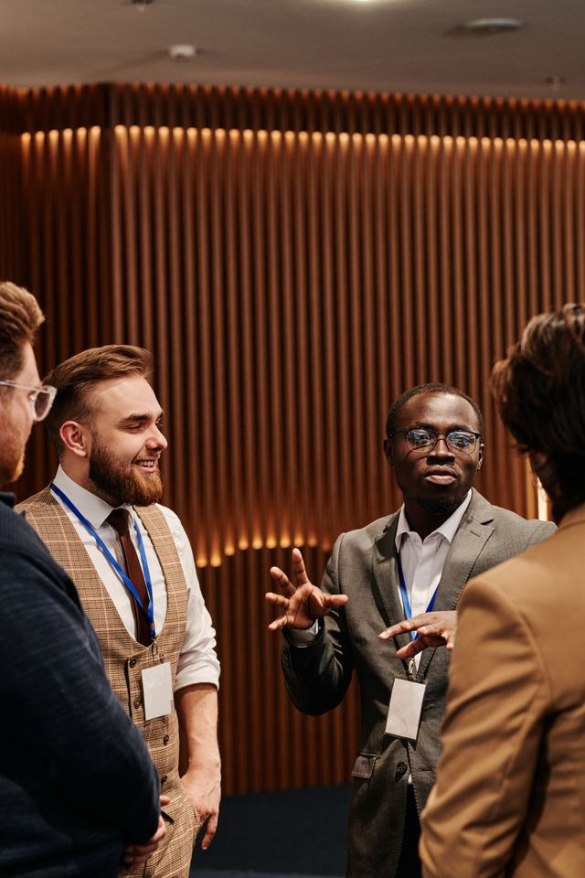
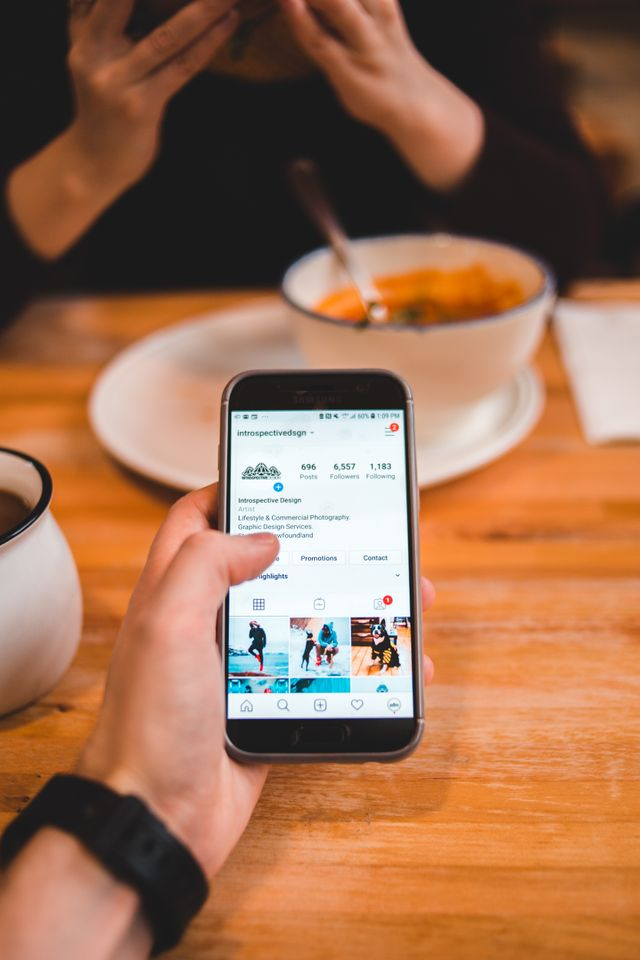

Martin Ferrero - Fotografo Profesional
Mi Presentacion
Soy Martín Ferrero, fotógrafo profesional especializado en retratos, fotografía comercial y producción de
contenido visual para marcas y emprendimientos.
Mi objetivo es crear imágenes que no solamente se vean bien, sino que también comuniquen correctamente
la
identidad de cada persona, proyecto o negocio.
Trabajo principalmente con profesionales independientes, emprendedores y pequeñas empresas que necesitan
fotografías para redes sociales, sitios web, catálogos, presentaciones comerciales o campañas
publicitarias.
Cada trabajo comienza con una conversación para entender qué necesita el cliente, dónde se utilizarán
las fotografías y qué estilo visual quiere transmitir.
Mis Servicios
-
Retratos profesionales
Sesiones fotográficas destinadas a profesionales, emprendedores y personas que necesitan mejorar su imagen para perfiles profesionales, redes sociales, currículums, sitios web o presentaciones comerciales.

-
Fotografía para marcas y emprendimientos
Producción de fotografías para mostrar productos, espacios de trabajo, procesos y personas relacionadas con una marca. Las imágenes pueden utilizarse en redes sociales, tiendas online, catálogos y campañas publicitarias.

-
Fotografía de productos
Sesiones destinadas a obtener imágenes claras y profesionales de productos para comercio electrónico, redes sociales, catálogos digitales y material promocional.

-
Cobertura de eventos corporativos
Registro fotográfico de reuniones empresariales, presentaciones, inauguraciones, capacitaciones y otros eventos relacionados con empresas y organizaciones.

-
Contenido para redes sociales
Producción de fotografías pensadas específicamente para publicaciones, campañas y comunicación digital de marcas y profesionales.

Mi Trayectoria
Trabajo profesionalmente en fotografía desde hace más de siete años.
Durante este tiempo he participado en proyectos para profesionales independientes, comercios,
emprendimientos gastronómicos, marcas de indumentaria y pequeñas empresas.
Además de realizar las sesiones fotográficas, acompaño a cada cliente durante la planificación del
trabajo para definir el tipo de imágenes necesarias, la ubicación, el estilo visual y el objetivo de
cada producción.
Mi forma de trabajo busca combinar una buena calidad técnica con imágenes naturales y funcionales para
los diferentes medios donde serán utilizadas.